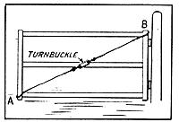
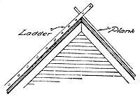

Reprinted with permission from The Farm Journal, copyright 1929, Wilmer Atkinson Company
A TEN-YEAR study of gardens from Oklahoma to Minnesota, from Idaho and Washington to West Virginia and Pennsylvania, convinces me that the average garden produces only about 50 per cent of the assortment of highquality vegetables within the range of its capability. A few gardens are mighty good, running up toward the 100 per cent mark, but a lot more of them are complete failures, not paying for seed and an honest rental on the soil. J. P.
Buy your spraying materials not merelv on the basis of price per pound or per gallon, but on the basis of effectiveness and coverage as well. Higher percentage of kill of insects and greater coverage sometimes go with higher price, with the result of lower cost per tree for spraying.
The secret of getting a good yield from sweet peppers is to start them early indoors. Peppers, originally a tropical product, thrive best in hot weather. Sown in the outdoor garden in April or May, they mature too slowly to bear well before early frosts.
If planted inside in boxes about March 15, or a little earlier, transplanted once, and again to lite cold frame, and
finally set out about June 1, they will soon blossom and will bear steadily until frosts overtake
them. J. E. T.
Sweet peas should be sown early. They can be started indoors in four-inch pots. After the seeds have started, keep them in a place that is not too warm. The plants can he moved outdoors when severe weather is past.
Flowers such as dahlias, chrysanthemums, hardy phlox- and the like need stakes to keep Iitem from falling over. Now is a good time to get the stakes ready for next summer. Chances are, harvest will be in full swing when the stakes are needed, and the menfolks won't feel then that time can be spared for the work.
FOR three or more years, root-rot had seriously cut corn yields for Thomas McCormick, Gallia county, Ohio. Beginning with the 1928 season, he used entirely new seed, limed the soil, broadcast an 0:14:6 fertilizer and used a 2:12:6 goods in the hill.
For both the 1928 and 1929 season he reports: "My corn ears better and I have no root-rot. The new treatment has apparently solved my trouble."
lie formerly used only a broadcast application of superphosphate.
FOUR gallons of water for each gallon of milk produced-that's what cows need. But they won't drink that much in winter months if they have to stick their noses through a hole in the ice.
A tank-heater, or drinking-cups in the stanchions, will take the chill off the water so that the cows will drink all they need. But even if there is a heater in the watering-tank, a cow will not stand and drink if she is exposed to a cold wind. The tank should be protected by a windbreak.
Which Fertilizer Returns from the use of Shall I Use: various fertilizers will vary with lire soil types, as well as with the crop grown and the seasonal condition. No broad general statements can be given. A wise practise is this: Test the value of certain materials on your own soils and thus determine the value for your own particular conditions. Many farmers are doing it that way and are finding out which fertilizers they can use with profit. For instance, Everett Pownal, Cedar county, Iowa, on Tama silt loam, secured a 15-bushel-per-acre corn increase with superphosphate. A 2:1:3:2 fertilizer gave a 16-bushel increase over non-fertilized corn two years later. W. D. Strayer, Black Hawk county, Iowa, on Tama silt loam, had an increase of nearly one-fourth of a ton of clover per acre from the use of supetphosphate.
Here are some of the interesting and entertaining items
Wilmer Atkinson printed in The Farm. journal for October, 1879
•Strawberries should not be planted in an old sod.
•The profits from twenty-five hens are much greater in proportion than from one hundred, if kept around one barn or farmhouse. We have tried it.
•It is said that hiccough is cured by a lump of sugar steeped in vinegar.
•Ten bushels of corn ought to make a hog weigh three hundred pounds.
•An old stock breeder says that the best cow bred for milk, cream and butter is high-grade Jersey, a mixture of Jersey and Ayrshire bloods, say seveneighth Jersey and one-eighth Ayrshire.
Making a Gate as Strong as New
SAGGING gates can be strengthened by the addition of a piece of strong wire and a turnbuckle, as shown in the diagram. Any sag can be taken up by tightening up the turnbuckle.
Small turnbuckles for this purpose can be secured at any hardware store; or if you happen to have an old buck-saw around, the turnbuckle of the saw can be used with equally good results.
The wire can be wrapped around points A and B; or, to make a neater job, special fastenings can be made for the wire. The form or shape of these fastenings will depend very much on the construction construction
of the gate. For that reason, no specific directions are given. G. C. E.
IT was necessary to repair the top bricks on the flue on the house the other day. The ladder was not quite long enough to reach from the roof of the kitchen porch to the ridge.
A large spike was driven through one end of a plank and the plank was carried to the roof. The ladder was pushed up past the ridge and the plank inserted between the top and second-from-the-top rungs. The plank was then slid down the opposite side until the spike caught against the top rung. A horse hitched to that ladder might have pulled it to pieces, but he wouldn't have budged the anchor. D. V. H.
An old wedding-day rite which because of its beauty and sentiment seems well worth reviving is that of planting bridal,trees, one for the bride and one for the groom, not far from the threshold of the newly established home.
|
|
|
 |
|
 |
|
|